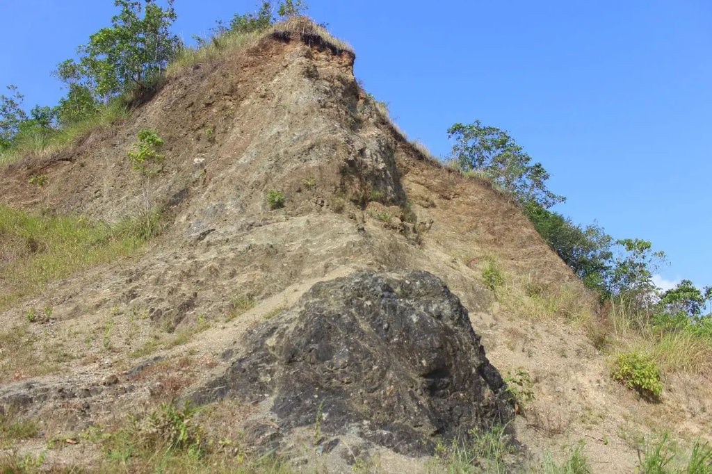
Alicia Schist
Formed 150M to 66M years ago when the ancient ocean floor underwent intense tectonic activity, creating Bohol's oldest rock foundation.
150 million years of natural formation, living cultural heritage, barrier reefs, and cone-shaped limestone hills across 47 municipalities and 1 city.
Explore GeoparkCertified in May 2023 as the first and only UNESCO Global Geopark in the Philippines, Bohol occupies an area of 8,808 km² and is home to 1.4 million people.
From the ancient 150-million-year-old Alicia Schist to the Chocolate Hills, the Danajon Double Barrier Reef, the 425-hectare Banacon Island mangrove forest, and the endemic Philippine tarsier—experience an extraordinary living landscape.
Read Full History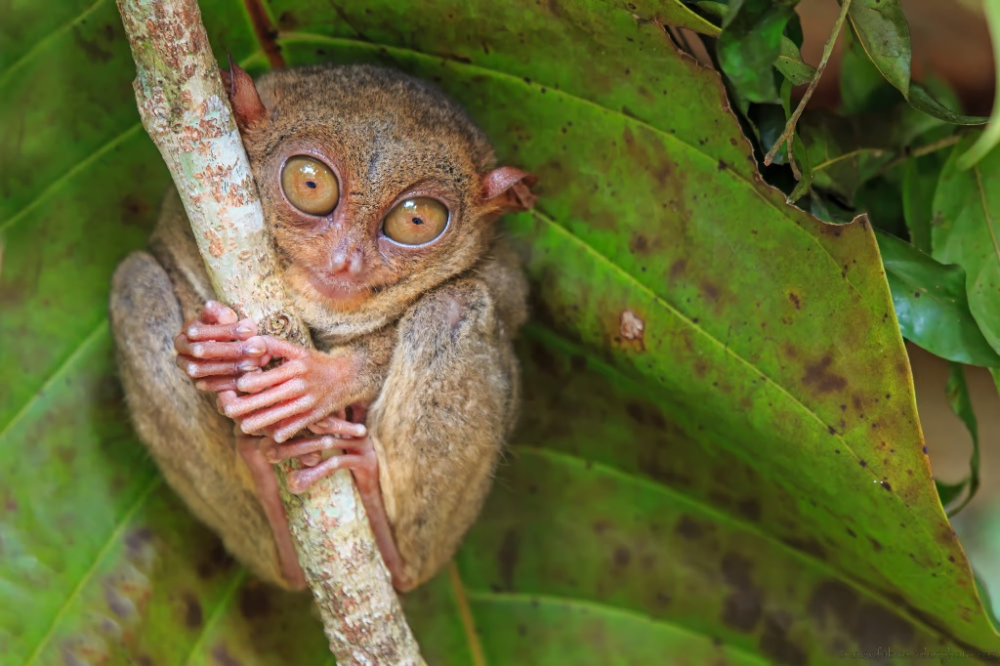
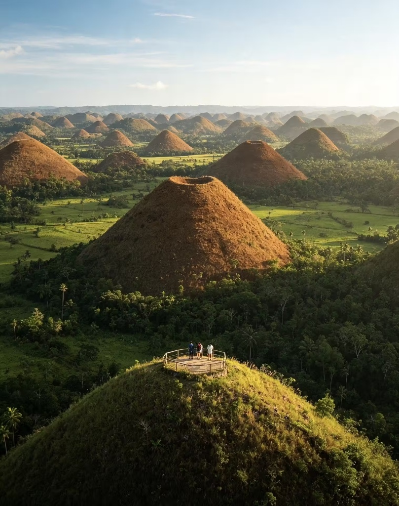
Tap any geosite card to open its complete geological history, formation timeline, and conservation story.

Formed 150M to 66M years ago when the ancient ocean floor underwent intense tectonic activity, creating Bohol's oldest rock foundation.
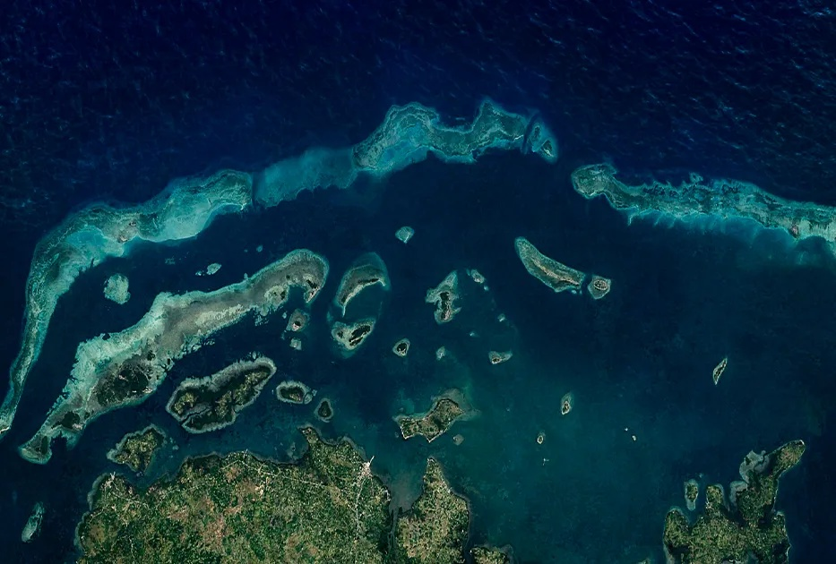
A rare double barrier reef along Bohol's north coast, growing continuously over thousands of years alongside Banacon's 425-ha mangroves.
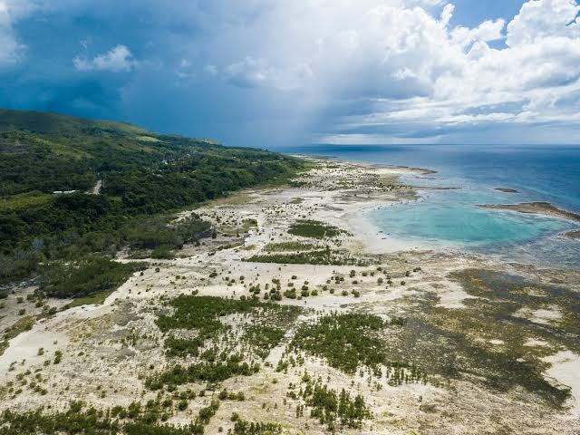
Created instantly during the October 15, 2013 magnitude 7.2 earthquake, uplifting the seabed by 1.5 meters along the western coast.
Beloved Boholano folktales explaining the Chocolate Hills, mystical caves, rivers, and ancient sacred islands. Tap any card to read the full story.
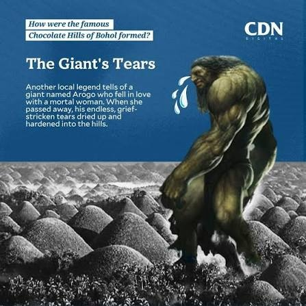
A powerful giant named Arogo fell in love with a mortal woman, Aloya. When she died, his endless grief-stricken tears dried and hardened into the hills.
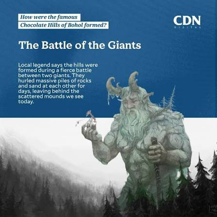
Two mighty giants feuded and hurled massive boulders, stones, and sand at each other for days before tiring, becoming friends, and leaving the mounds behind.
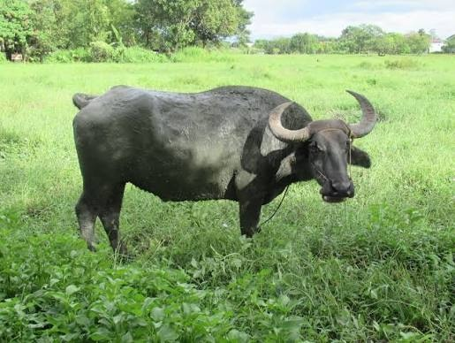
Townspeople left spoiled food for a giant carabao terrorizing their crops. After eating it, the sick beast left behind mounds of waste that hardened into hills.
How a farmer clearing his land in Dauis discovered a hidden underground lagoon by dropping stones and lowering a woven ladder into the earth.
Folklore tells of a sacred golden church bell hidden deep beneath the emerald waters of the Loboc River to protect it from raiders.
Known as the cradle of Bohol’s ancient babaylan shamans, where red hematite handprints and boat-coffins rest inside sea-carved caves.
Encompassing 47 municipalities and 1 city with a population of 1.4 million people.
First UNESCO Global Geopark in the Philippines, revalidated every four years.
Home to the Philippine tarsier and the 425-hectare Banacon Island mangrove forest.
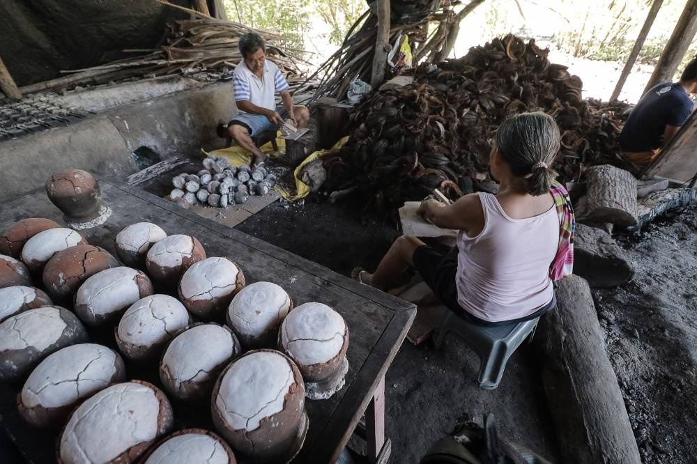
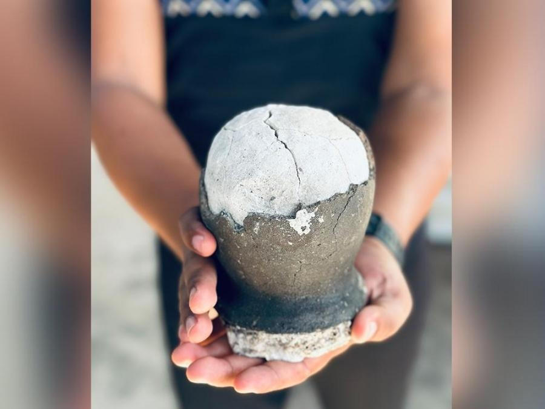
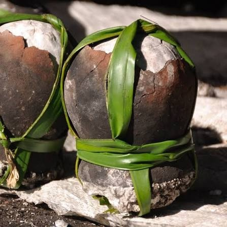
Beyond its million-year-old rock formations and coral reefs, the Bohol Island Geopark safeguards rare intangible cultural traditions like Asin Tibuok—an artisanal sea salt boiled in handmade clay pots over coconut husk fires and wrapped in woven palm leaves.
Bohol Island Geopark is just an amazing place to experience the geological past, nature, and culture!
Switch between the live GPS pin map and the illustrated “Balik sa Bohol” cultural & adventure map.
Curated resorts and eco-stays near Bohol’s key geopark sites.
Check details, reviews, and rates
View guest ratings and booking options
Explore room options and property features
Check out photos and availability
Find budget details and reviews
Local shops for Boholano delicacies, crafts, and pasalubong.
Local delicacies & authentic pasalubong
Bohol-themed apparel & keepsakes
Native handicrafts near Chocolate Hills
Local souvenirs & handcrafted gifts
Unfolding across two distinct timelines: millions of years of natural formation, followed by a decade-long institutional push to secure international protection.
Scrub the timeline or tap any era below to inspect Bohol’s 2.5D geological layers:
Bohol's famous cone-shaped limestone hills developed through geological processes, including the erosion and dissolution of ancient limestone formed from coral reefs.
A magnitude 7.2 earthquake struck Bohol, uplifting sections of the seabed to create visible marine terraces in Loon and Maribojoc and a ground rupture in Inabanga.
Datu Sikatuna and Spanish explorer Miguel López de Legazpi entered into a blood compact, symbolizing friendship and an agreement central to Bohol's cultural heritage.
An initiative inviting young Boholanos to help shape youth participation in Geopark conservation and development.
Bohol became the first UNESCO Global Geopark in the Philippines, recognizing its internationally significant geological heritage, biodiversity, cultural traditions, and commitment to conservation and sustainable development.
Plan your route, listen to field soundscapes, check seasonal conditions, and learn local Boholano phrases.
Not sure where to start across 47 municipalities and 1 city? Open our curated step-by-step route planner.
Greet locals warmly in Boholano. Open our pocket phrasebook with one-tap copy and pronunciation guides.
Explore the rare gliding mammals, forest-canopy lizards, and centuries-old mangrove sanctuaries thriving across Bohol.
Known locally as the Cagwang, the Philippine colugo is a nocturnal gliding mammal inhabiting Bohol’s secondary limestone forests and lush wooded valleys.
Equipped with a wide, fur-covered gliding membrane (patagium) stretching from its neck to the tip of its tail, it can soar silently over 100 meters between forest canopies without descending to the ground.
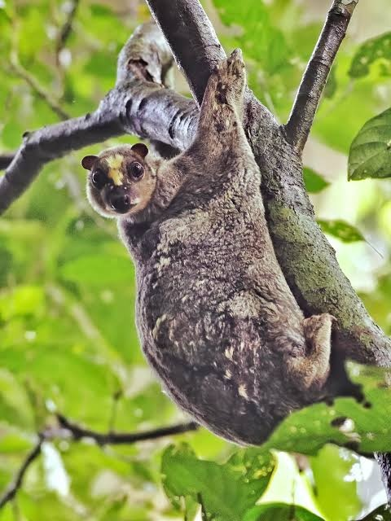
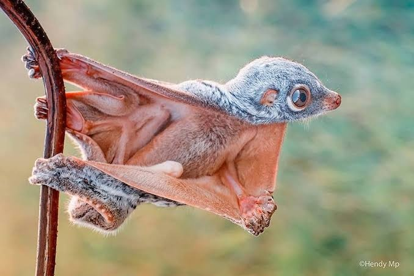
Put your knowledge of Bohol’s 150-million-year rock formations, rare wildlife, and living heritage to the test—and unlock your official downloadable Honorary Geopark Ranger Pass.
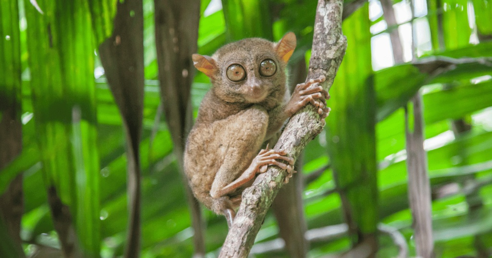
"The official symbol and guardian of the Bohol Island Geopark is Mawmaw, an animated protector inspired by the Mawmag (the local Visayan term for the endemic Philippine tarsier). Mawmaw watches over the island's limestone forests, caves, and marine sanctuaries, representing Bohol's commitment to biodiversity and sustainable geotourism."Mawmaw · The Protector Bohol Island UNESCO Global Geopark